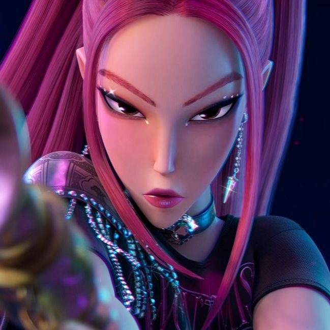

Mira is a member of HUNTR/X, a world-famous girl group whose songs help protect the Honmoon from demonic forces. Confident, charismatic, and fearless, she is known for her strong personality and unwavering determination.
As a demon hunter, Mira combines exceptional combat skills with her talent as a performer. She is always ready to face danger and never hesitates to stand beside her teammates when they need her. Beneath her confident exterior, Mira deeply values friendship, trust, and loyalty.
Throughout the story, Mira supports both Rumi and Zoey as they face difficult challenges and personal struggles. Even when the future of the Honmoon is uncertain, she remains determined to protect the people she cares about and continue fighting against Gwi-Ma's growing influence.
Together with Rumi and Zoey, Mira plays a crucial role in the final battle against Gwi-Ma and helps create the Golden Honmoon. Her courage, strength, and devotion to her friends make her one of the most reliable members of HUNTR/X.